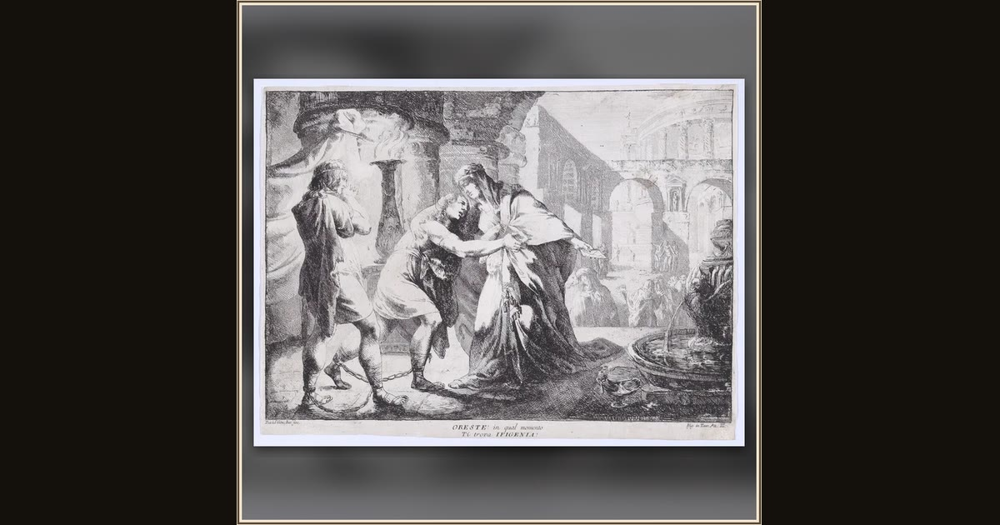

Iphigenia accompanied by Pylades recognises Orestes, whom she is about to sacrifice
Giovanni David · 1776 · met
The chained Orestes reaches for Iphigenia as Pylades stands to one side. She reveals herself to her brother, then asks him to bring her to Argos (773–774). Explore its place in Euripides's Plays, Iphigenia in Tauris, line 767.